Техника высоких напряжений
Лекция 10
Частичные разряды: физика и измерение
Почему разряд внутри изоляции не пробивает её сразу, что видит прибор и как правильно измерять
Цель лекции. Объяснить физику частичных разрядов (ЧР) в газовых включениях твёрдой изоляции, связать её с законом Пашена и схемой замещения a–b–c, ввести измеряемые характеристики ЧР и научить измерять их по ГОСТ Р 55191-2012 (МЭК 60270): схема, калибровка, чувствительность, помехи, локализация. Учебные вопросы. 1) Что такое ЧР и почему они опасны. 2) Где возникают: усиление поля в порах. 3) Пробой газа в поре по Пашену. 4) Схема a–b–c, кажущийся и истинный заряд. 5) Процесс во времени: серия разрядов, эффект памяти, статистическое запаздывание, Uв и Uп. 6) Характеристики ЧР. 7) Разрушение изоляции разрядами. 8) Измерение по ГОСТ Р 55191. 9) Другие методы. 10) Локализация. 11) Нормы. Связанные материалы. Интерактив «ЧР и PRPD» (вкладки 1 «Пора в изоляции» и 3 «Измерение»), лекция 11 «PRPD-диаграммы и диагностика изоляции», практическое занятие, чек-лист. Опора: учебник Важова В. Ф., Лавриновича В. А. «Техника высоких напряжений» (ТПУ, 2014), п. 1.1.6 и 1.2.2.4; ГОСТ Р 55191-2012. |
1. Что такое частичный разряд
Частичный разряд — местный электрический разряд, который замыкает только часть изоляции между электродами (ГОСТ Р 55191-2012). В отличие от пробоя, после ЧР изоляция продолжает выдерживать напряжение: разряд гаснет, но повторяется каждый полупериод, тысячи раз в секунду.
ЧР возникают там, где местная напряжённость превышает электрическую прочность среды, а вся изоляция в целом ещё прочна. Это газовые поры и расслоения в твёрдой изоляции, пузырьки в жидкой, поверхности раздела материалов, острые кромки электродов в воздухе.
| Вид ЧР | Где возникает | Пример |
|---|---|---|
| Внутренний | Газовая пора, расслоение, трещина внутри изоляции | Непропитка литой обмотки, пора в изоляции кабеля, расслоение слюдяной ленты |
| Поверхностный | Вдоль поверхности твёрдой изоляции, где велика касательная составляющая поля | Край экрана кабельной муфты, выход стержня из паза, загрязнённый изолятор |
| Корона | Газ у электрода с малым радиусом кривизны | Острая кромка шины, заусенец, конец провода |
| В каналах триинга | В разветвлённых каналах, которые разряды «проели» в полимере | Электрический триинг в изоляции кабеля из сшитого полиэтилена |
ЧР важны по двум причинам. Во-первых, каждый разряд понемногу разрушает изоляцию — это главный механизм её электрического старения. Во-вторых, ЧР — самый чувствительный «свидетель» дефекта: их можно измерить задолго до пробоя и по ним понять, какой дефект и где.
2. Почему поле в поре больше, чем в изоляции
Рассмотрим плоскую газовую пору толщиной d в изоляции толщиной D с проницаемостью εr, поперёк поля. Пора и остальная изоляция включены последовательно, как два конденсатора. На границе «изоляция — газ» непрерывна нормальная составляющая электрической индукции D = ε0εE, поэтому:
(1)
Поле в плоской поре в εr раз больше, чем в соседней изоляции, а электрическая прочность газа в десятки раз ниже прочности твёрдого диэлектрика. Поэтому газ в поре пробивается задолго до пробоя изоляции. Для сферической поры усиление меньше:
(2)
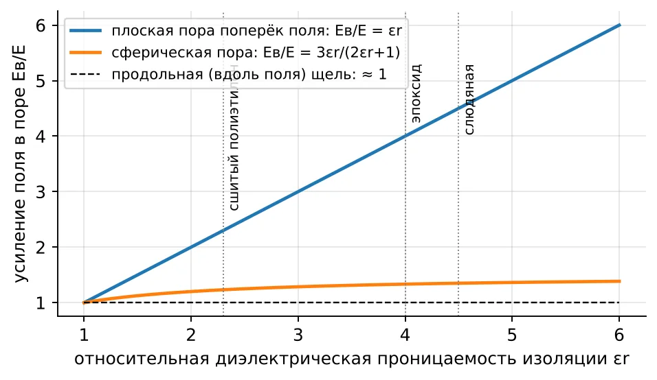
Рис. 1. Усиление поля в поре в зависимости от εr изоляции
В интерактиве. Попробуйте сами: вкладка 1 «Пора в изоляции», переключайте материал. Чем больше εr изоляции, тем больше доля напряжения на поре k и тем ниже напряжение возникновения Uв; пробивное напряжение самой поры Uпр от материала не зависит.
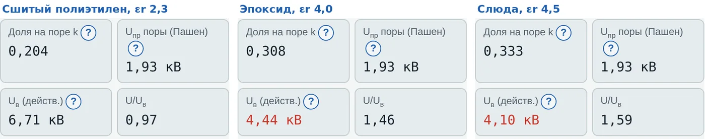
Рис. 2. Интерактив, вкладка 1: та же пора 0,3 мм при U = 6,5 кВ в трёх материалах
Доля приложенного напряжения U, которая ложится на плоскую пору, следует из делителя напряжения на последовательных ёмкостях:
(3)
Пример: эпоксидный компаунд, εr = 4,0, D = 3 мм, пора d = 0,3 мм: k = 0,3·4/(2,7 + 1,2) = 0,308. Почти треть напряжения ложится на пору, занимающую 10 % толщины.
3. Пробой газа в поре — закон Пашена
Газ в поре пробивается по тем же законам, что и воздушный промежуток (лекция 4). Пробивное напряжение однородного поля зависит от произведения давления p на расстояние d (учебник, формула 1.25):
(4)
Для воздуха A = 15 1/(см·мм рт. ст.), B = 365 В/(см·мм рт. ст.), коэффициент вторичной эмиссии γ ≈ 0,01. Давление в поре принимают атмосферным (760 мм рт. ст.), d — в сантиметрах.
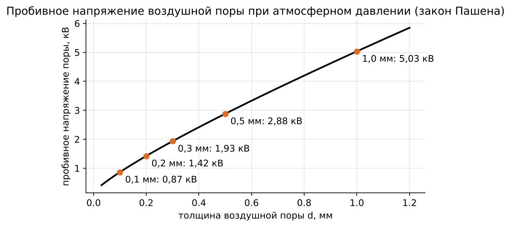
Рис. 3. Пробивное напряжение воздушной поры при атмосферном давлении
| Толщина поры, мм | p·d, мм рт. ст.·см | Uпр, кВ | Eпр = Uпр/d, кВ/мм |
|---|---|---|---|
| 0,1 | 7,6 | 0,87 | 8,7 |
| 0,2 | 15,2 | 1,42 | 7,1 |
| 0,3 | 22,8 | 1,93 | 6,4 |
| 0,5 | 38,0 | 2,88 | 5,8 |
| 1,0 | 76,0 | 5,03 | 5,0 |
Обратите внимание: чем меньше пора, тем выше её пробивная напряжённость. Мелкие поры прочнее — это следствие закона Пашена при малых p·d. Именно поэтому для кабелей нормируют наибольший допустимый размер пор (расчётное задание, вариант 1, неделя 10).
Напряжение возникновения ЧР. Разряды начинаются, когда амплитуда напряжения на поре k·√2·U достигает Uпр:
(5)
Для поры 0,3 мм в эпоксиде: Uв = 1,93/(1,414·0,308) = 4,44 кВ (действующее). Зависимость Uв от размера поры показана на рисунке. С ростом поры Uв сначала снижается: на пору ложится большая доля напряжения, а её прочность растёт медленнее. Но у толстых пор, сравнимых с толщиной изоляции, Uв снова растёт: доля напряжения k приближается к единице и дальше не увеличивается, а Uпр продолжает расти. Самые «опасные» по Uв поры — средние, десятые доли миллиметра.
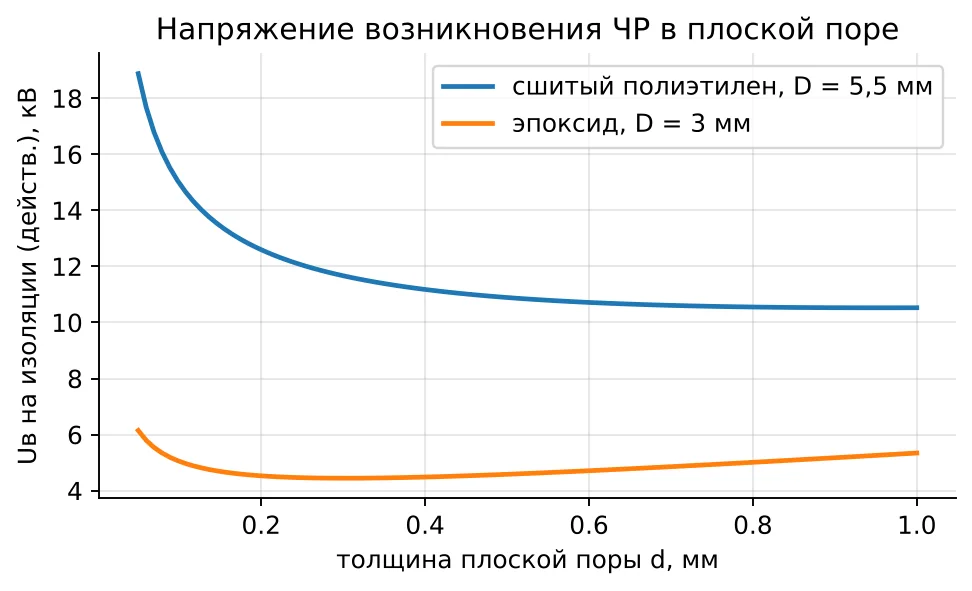
Рис. 4. Напряжение возникновения ЧР в плоской поре
В интерактиве. В интерактиве толщина поры меняется кнопками «Толщина поры d». Сравните Uпр и Uв для 0,1; 0,3 и 0,5 мм с графиком: тонкая пора требует большего напряжения.
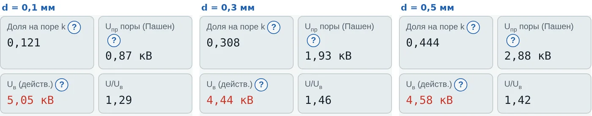
Рис. 5. Интерактив, вкладка 1: эпоксид, U = 6,5 кВ, толщина поры 0,1; 0,3 и 0,5 мм
4. Схема замещения a–b–c
Для анализа ЧР изоляцию с порой заменяют схемой из трёх ёмкостей (схема Гемана и Филиппова, 1932): Cc — ёмкость самой поры; Cb — ёмкость изоляции последовательно с порой (столбики над и под ней); Ca — ёмкость всей остальной изоляции объекта. Пробой газа изображают искровым промежутком F параллельно Cc. Обычно Ca ≫ Cc ≫ Cb.
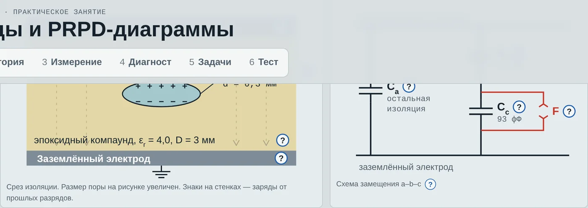
Рис. 6. Срез изоляции с порой и схема замещения a–b–c (интерактив, вкладка 1)
Для поры площадью A:
(6)
Когда промежуток F срабатывает, напряжение на поре падает от Uпр до остаточного Uост ≈ (0,05–0,2)·Uпр — разряд гаснет, не доводя напряжение до нуля. Скачок ΔU = Uпр − Uост. Внутри поры переносится истинный заряд:
(7)
Но прибор подключён к выводам объекта, а не к поре. Разряд «виден» снаружи только через Cb: на выводах объекта появляется импульс, эквивалентный введению кажущегося заряда
(8)
Кажущийся заряд меньше истинного в (Cb + Cc)/Cb раз. Пример для поры 0,3 мм диаметром 2 мм в эпоксиде (D = 3 мм): Cc = 93 фФ, Cb = 41 фФ, ΔU ≈ 0,92·1,93 = 1,78 кВ. Тогда q = 73 пКл, qист = 238 пКл. Истинный заряд снаружи измерить нельзя, поэтому все нормы и протоколы оперируют кажущимся зарядом.
| Важно. Кажущийся заряд зависит не только от поры, но и от того, где она находится и как подключён прибор. Поэтому сравнивать уровни ЧР можно только для одинаковых объектов, измеренных по одной схеме после калибровки. |
5. Как развиваются разряды во времени
Пусть на изоляцию подано u(t) = √2·U·sin ωt. Без разрядов напряжение на поре повторяет k·u(t). Как только оно достигает +Uпр, газ пробивается, напряжение на поре скачком падает до Uост, а затем снова растёт вместе с приложенным напряжением. Если до пика напряжения хватает запаса, следует второй, третий разряд. На спаде полуволны разрядов нет: напряжение на поре уменьшается. В отрицательной полуволне всё повторяется с другим знаком.
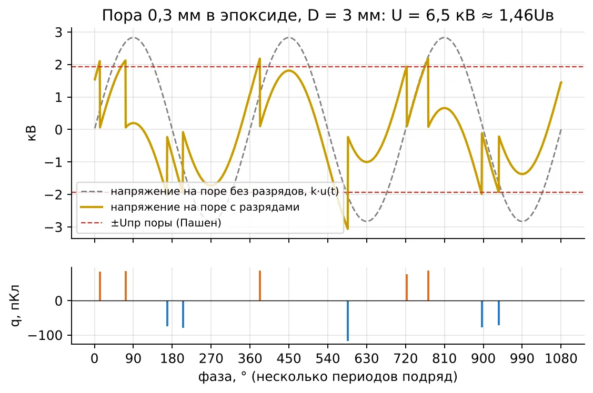
Рис. 7. Напряжение на поре и импульсы ЧР: U ≈ 1,46Uв (модель интерактива)
В интерактиве. Эту же картину студент получает сам: вкладка 1, U = 6,5 кВ, скорость «10 периодов/с». Верхний экран — осциллограф: напряжение на поре «пилой» падает при каждом разряде. Нижний — PRPD, которая копится из этих разрядов.
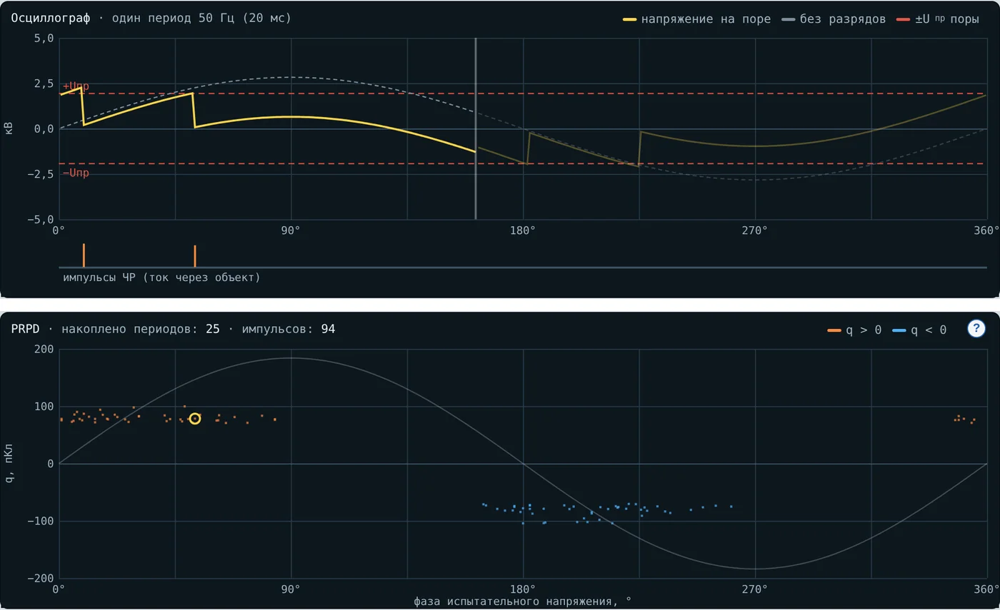
Рис. 8. Интерактив, вкладка 1: осциллограф и накопленная PRPD при U ≈ 1,46Uв
Из рисунка видны три главные закономерности, на которых построена вся диагностика по PRPD (лекция 11):
Разряды идут на подъёмах полуволн по модулю: в положительной — примерно 0–90°, в отрицательной — 180–270°.
Импульсы положительной полуволны имеют положительную полярность, отрицательной — отрицательную; для поры величины примерно равны (симметрия).
Число разрядов за полупериод растёт с напряжением, а величина каждого определяется ΔU и почти не зависит от напряжения.
5.1. Эффект памяти
После разряда электроны оседают на одной стенке поры, положительные ионы — на другой. Этот поверхностный заряд создаёт в поре поле, направленное против приложенного. До конца полуволны он мешает новым разрядам, а в следующей полуволне — помогает: напряжение на поре достигает пробивного раньше. Поэтому при U заметно выше Uв первые разряды полуволны начинаются до нуля приложенного напряжения (рисунок ниже).
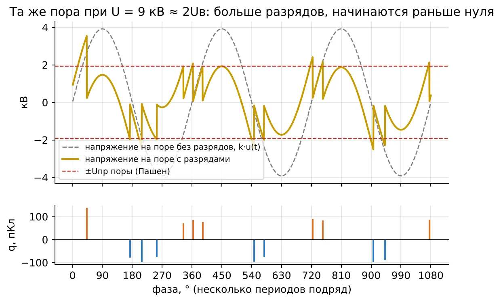
Рис. 9. Та же пора при U ≈ 2Uв: больше разрядов, начинаются раньше нуля напряжения
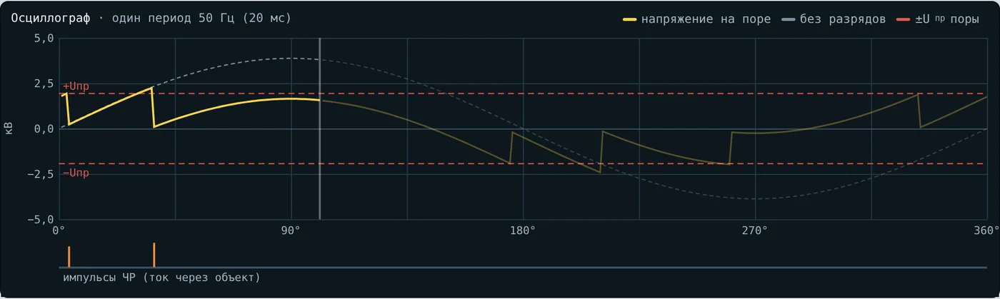
Рис. 10. Интерактив, вкладка 1: та же пора при U = 8,9 кВ ≈ 2Uв
5.2. Статистическое запаздывание
Для начала разряда в поре нужен свободный электрон. Его появление случайно: космическое излучение, эмиссия со стенок, отрыв электронов от поверхностных зарядов. Пока электрона нет, напряжение на поре успевает превысить Uпр. Поэтому импульсы различаются по величине и фазе — на PRPD они образуют «облака», а не точки. В старой поре со множеством поверхностных зарядов электроны доступны сразу: разряды становятся мельче и чаще («роение»), величина падает при неизменной опасности.
5.3. Напряжения возникновения и погасания
Напряжение возникновения Uв — наименьшее напряжение, при котором при плавном подъёме появляются повторяющиеся ЧР выше заданного порога. Напряжение погасания Uп — напряжение при плавном снижении, когда ЧР прекращаются. Благодаря эффекту памяти разряды поддерживают сами себя, поэтому Uп < Uв, иногда в 1,2–1,5 раза. Практический вывод: если ЧР однажды возникли (например, от перенапряжения), они могут продолжаться и при рабочем напряжении. Поэтому требование «Uп выше рабочего» строже, чем «Uв выше рабочего».
6. Характеристики ЧР
ГОСТ Р 55191 вводит следующие величины. Здесь qi — кажущийся заряд i-го импульса, T — время наблюдения, ui — мгновенное напряжение в момент i-го импульса.
| Величина | Определение | Единица |
|---|---|---|
| Кажущийся заряд q | Заряд, дающий на приборе такой же отсчёт, как импульс ЧР | пКл (10⁻¹² Кл) |
| Частота повторения n | Число импульсов в секунду | 1/с |
| Средний ток I | I = Σ|qi|/T | А |
| Квадратичная скорость D | D = Σqi²/T | Кл²/с |
| Мощность ЧР P | P = Σqi·ui/T | Вт |
| Uв, Uп | Напряжения возникновения и погасания | кВ |
| Qm (МЭК/TS 60034-27) | Величина импульсов, повторяющихся 10 раз в секунду | пКл, нКл, мВ |
Энергия одного разряда. Разряд переносит заряд q при напряжении, близком к амплитуде напряжения возникновения. Оценка (Крюгер):
(9)
Для q = 500 пКл и Uв = 6 кВ: W ≈ 2,1 мкДж. Мало для одного разряда, но при 10⁴ импульсов в секунду за год в одной точке выделяется порядка килоджоуля.
7. Как ЧР разрушают изоляцию
Каждый разряд действует на стенки поры сразу несколькими способами:
Бомбардировка ионами и электронами — эрозия поверхности, разрыв молекулярных цепей полимера.
Химия: в воздухе образуются озон и оксиды азота; с влагой — азотная кислота, которая травит органическую изоляцию. В масле выделяется водород.
Ультрафиолет разряда разрушает полимер.
Местный нагрев до сотен градусов в канале разряда.
Триинг: на дне поры появляются тонкие каналы, они ветвятся, в них тоже идут ЧР; дерево растёт к противоположному электроду, и наступает пробой.
Стойкость материалов к ЧР очень разная, и это определяет допустимые уровни:
| Материал | Стойкость к ЧР | Следствие для норм |
|---|---|---|
| Слюда (обмотки машин) | Высокая: неорганический барьер | Допустимы ЧР в тысячи пКл; важен тренд, а не абсолютное значение |
| Пропитанная бумага в масле | Средняя: масло залечивает, но выделяет газ | Нормируют уровень при испытании; контроль газов в масле |
| Эпоксидный компаунд, сшитый полиэтилен | Низкая: эрозия и триинги | Нормы единицы–десятки пКл; поры — брак |
| Воздух у кромок (корона) | Восстанавливается | Сама корона не разрушает твёрдую изоляцию, но даёт озон и помехи |
Связь с лекцией 9: ЧР — главная причина того, что ресурс изоляции падает с напряжённостью по закону «кривой жизни» t = A·E−n (учебник, формула 1.78).
8. Измерение ЧР по ГОСТ Р 55191 (МЭК 60270)
8.1. Схема
Импульс тока ЧР длится наносекунды. Чтобы его зарегистрировать, параллельно объекту Ca ставят конденсатор связи Ck, а последовательно с ним — измерительное устройство связи Zm. Источник отделяют от схемы фильтром Z: тогда при разряде ток быстро перезаряжает Ca через Ck и Zm, а не через источник.
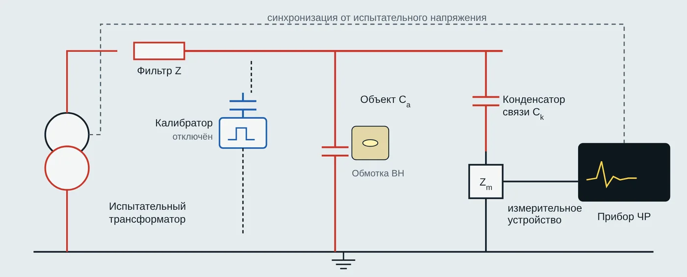
Рис. 11. Схема измерения ЧР с измерительным устройством последовательно с конденсатором связи (интерактив, вкладка 3)
| Элемент | Назначение и требования |
|---|---|
| Испытательный трансформатор | Источник 50 Гц; собственные ЧР ниже фона схемы |
| Фильтр Z | Дроссель или резистор: не пускает импульс ЧР в источник и помехи из сети в схему |
| Объект Ca | Изолятор, обмотка, кабель; его ёмкость определяет чувствительность |
| Конденсатор связи Ck | Замыкает импульс через Zm; без собственных ЧР; чем больше Ck/Ca, тем выше чувствительность |
| Измерительное устройство Zm | RLC-цепь: ток 50 Гц отводит на землю, импульс превращает в напряжение для прибора |
| Прибор ЧР | Усилитель с полосой порядка 100–400 кГц и квазиинтегратор: отсчёт пропорционален заряду. Строит PRPD |
| Синхронизация | Фаза испытательного напряжения — без неё нельзя построить PRPD |
Стандарт допускает и другие схемы: измерительное устройство последовательно с объектом (если объект можно отсоединить от земли) и балансную (мостовую) схему, которая подавляет внешние помехи.
8.2. Почему прибор измеряет заряд
Спектр короткого импульса ЧР равномерен до десятков мегагерц, а его уровень на низких частотах пропорционален заряду импульса. Прибор с полосой ниже частоты, где спектр начинает спадать, «видит» именно заряд, независимо от формы импульса. Этим объясняется выбор полос стандарта: широкополосный режим f1 = 30–100 кГц, f2 ≤ 500 кГц, Δf = 100–400 кГц; узкополосный Δf = 9–30 кГц.
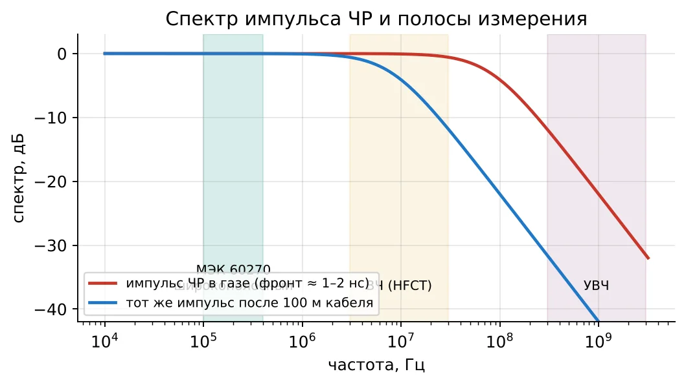
Рис. 12. Спектр импульса ЧР и полосы измерения
8.3. Чувствительность
Импульс ЧР делится между ёмкостью объекта и ветвью Ck. Через измерительное устройство проходит доля
(10)
Для обмотки Ca = 10 нФ при Ck = 1 нФ доля 9 %, при Ck = 100 пФ — около 1 %: чувствительность падает в 9 раз. Для протяжённых кабелей с большой ёмкостью нужен большой Ck, иначе слабые ЧР утонут в шуме.
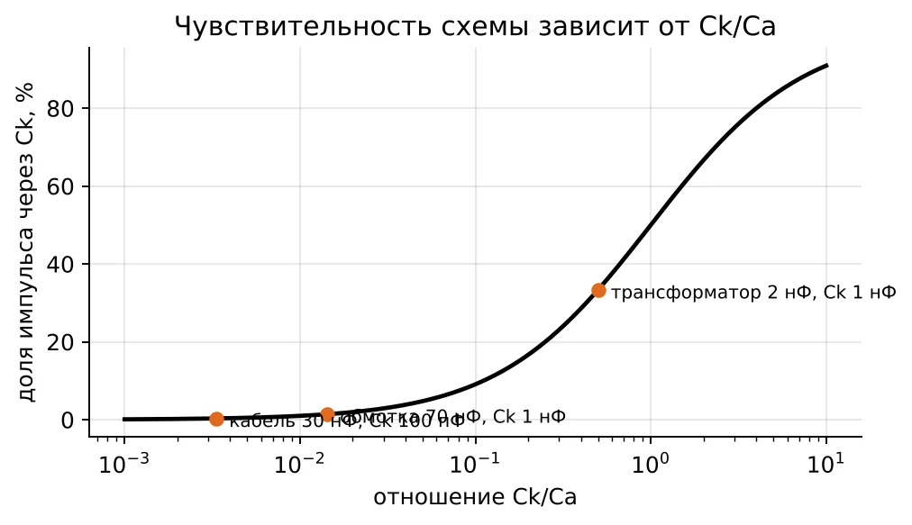
Рис. 13. Доля импульса, проходящая через измерительную ветвь
В интерактиве. В интерактиве (вкладка 3) это проверяется руками: смените конденсатор связи Ck и объект — «Доля через Ck» и «Порог чувствительности» пересчитаются. Порядок измерения по ГОСТ Р 55191 отмечается галочками справа.
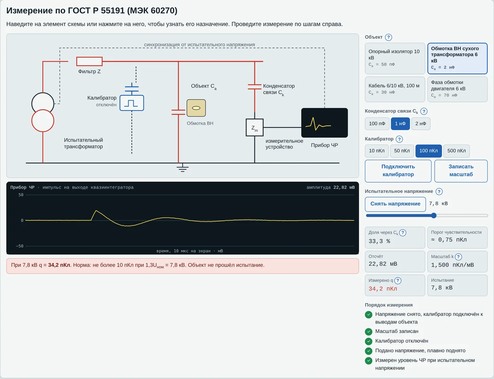
Рис. 14. Интерактив, вкладка 3: измерение после калибровки, обмотка ВН сухого трансформатора, Ck = 1 нФ
8.4. Калибровка
Калибратор — генератор ступеньки напряжения U0 с малым конденсатором C0 (C0 < 0,1Ca). Он вводит между выводами объекта известный заряд:
(11)
Отсчёт прибора Uкал даёт масштабный коэффициент k = q0/Uкал, пКл/мВ; затем любой отсчёт Uизм переводят в заряд: q = k·Uизм. Порядок обязателен:
Снять напряжение и заземлить объект.
Подключить калибратор к выводам объекта (не к прибору!).
Подать q0 того же порядка, что ожидаемые ЧР; записать Uкал и масштаб.
Отключить калибратор.
После любого изменения схемы (объект, Ck, провода) калибровать заново.
8.5. Порядок испытания
Измерить фон: схема собрана, напряжение подано на схему без объекта или ниже Uв. Уровень фона должен быть не больше половины нормы.
Плавно поднимать напряжение, отметить Uв — появление устойчивых импульсов выше порога.
Поднять до испытательного напряжения, выдержать заданное время, записать наибольший повторяющийся заряд и PRPD.
Плавно снижать напряжение, отметить Uп.
Сравнить с нормой, оформить протокол: схема, калибровка, фон, Uв, Uп, q при испытательном напряжении, PRPD.
9. Другие методы обнаружения ЧР
| Метод | Что регистрируют | Где применяют |
|---|---|---|
| ВЧ трансформатор тока (HFCT), 1–30 МГц | Импульс тока в заземлении экрана или нейтрали | Онлайн-контроль кабелей, машин, трансформаторов |
| Ёмкостные датчики 80 пФ | Импульс напряжения на выводах | Онлайн-мониторинг генераторов и двигателей |
| УВЧ, 0,3–3 ГГц | Электромагнитное излучение разряда | Элегазовые КРУЭ, силовые трансформаторы |
| Акустический (ультразвук 20–300 кГц) | Звуковая волна от разряда | Локация в баке трансформатора, КРУ, изоляторы |
| Переходное напряжение на корпусе (TEV) | Импульсы на металлической оболочке ячейки | Комплектные распределительные устройства 6–35 кВ |
| Анализ газов в масле | Водород и метан — продукты ЧР в масле | Маслонаполненные трансформаторы и вводы |
| Оптический | Свечение разряда, ультрафиолет | Корона на линиях и подстанциях (ультрафиолетовые камеры) |
Нетрадиционные методы не дают пикокулонов в смысле ГОСТ Р 55191 (их отсчёт в мВ или дБ нельзя напрямую сравнить с нормой), зато работают под рабочим напряжением, в условиях помех и подходят для локализации.
10. Где дефект: локализация
10.1. Кабель — по отражённому импульсу
Импульс ЧР из точки x на расстоянии x от прибора бежит в обе стороны со скоростью v. Одна волна приходит к прибору через x/v, другая доходит до разомкнутого дальнего конца, отражается и приходит позже. Разность времён:
(12)
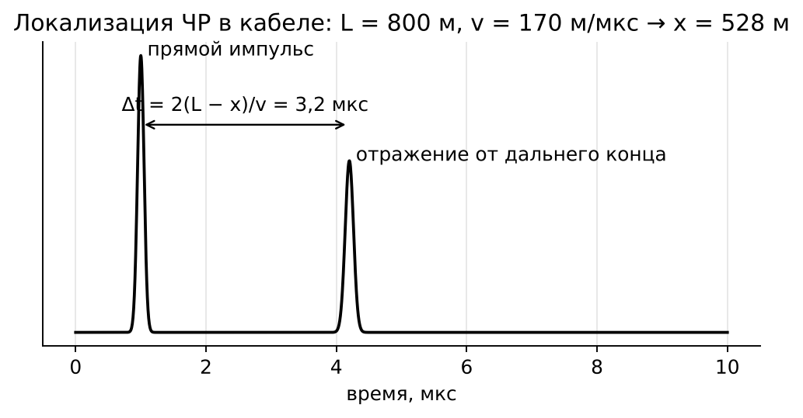
Рис. 15. Рефлектограмма ЧР в кабеле (интерактив, вкладка 3)
Скорость v берут из паспорта кабеля или измеряют рефлектометром: в реальном кабеле она ниже c/√εr из-за полупроводящих экранов, обычно 150–180 м/мкс. Чаще всего дефект оказывается в муфте — это сразу видно по расстоянию.
10.2. Трансформатор — по запаздыванию звука
Электрический сигнал приходит к прибору практически мгновенно и служит отметкой времени. Звук от того же разряда идёт в масле со скоростью около 1400 м/с. Задержка 210 мкс означает расстояние 0,29 м от датчика. Три-четыре датчика на баке дают точку пересечения сфер — место дефекта.
11. Нормы и критерии
Конкретные нормы задаются стандартами на оборудование и техническими условиями. Ниже — ориентировочные значения, чтобы почувствовать порядок величин; при испытании реального объекта проверяйте действующий документ.
| Оборудование | Условие испытания | Порядок нормы |
|---|---|---|
| Кабели с изоляцией из сшитого полиэтилена 6–35 кВ, заводские испытания | 1,73U0 | не более 10 пКл (МЭК 60502-2) |
| Сухие трансформаторы с литой изоляцией | около 1,3Uном | не более 10 пКл (МЭК 60076-11) |
| Измерительные трансформаторы, вводы | по стандарту на изделие | единицы–десятки пКл |
| Масляные силовые трансформаторы | по программе испытаний | сотни пКл |
| Обмотки машин со слюдяной изоляцией | фазное напряжение | абсолютной нормы нет: сравнение с прошлыми измерениями и однотипными машинами (МЭК/TS 60034-27) |
Порядок величин объясняется стойкостью материала к ЧР (раздел 7): полимер и литая изоляция не прощают разрядов, слюда терпит их десятилетиями.
12. Связь с расчётными заданиями
| Задание | Что применяется из лекции |
|---|---|
| Вариант 1, неделя 10 | Поле в поре изоляции кабеля, закон Пашена, наибольший допустимый размер поры |
| Вариант 1, неделя 13 | Калибровка: перевод милливольт в пикокулоны, кажущийся заряд |
| Вариант 1, неделя 14 | Напряжение возникновения ЧР по зависимости tgδ(U) |
| Вариант 5, недели 11 и 13 | Интенсивность ЧР в RIP-изоляции, схема онлайн-мониторинга |
Вопросы для самопроверки
Чем частичный разряд отличается от пробоя?
Почему поле в плоской поре в εr раз больше, чем в изоляции рядом?
Почему мелкие поры прочнее крупных по напряжённости?
Нарисуйте схему a–b–c и объясните, что означает каждая ёмкость.
Чем кажущийся заряд отличается от истинного? Какой больше и во сколько раз?
Почему разряды идут на подъёмах полуволн?
Что такое эффект памяти и как он проявляется на осциллограмме?
Почему Uп меньше Uв и почему это важно для эксплуатации?
Зачем нужен конденсатор связи и как его ёмкость влияет на чувствительность?
В каком порядке выполняют калибровку и почему калибратор подключают к выводам объекта?
Почему в обмотках машин допустимы ЧР в нКл, а в кабелях — единицы пКл?
Как найти место дефекта в кабеле по рефлектограмме ЧР?
Литература
Важов В. Ф., Лавринович В. А. Техника высоких напряжений: учебник. — Томск: Изд-во ТПУ, 2014. — п. 1.1.6, 1.2.2.
ГОСТ Р 55191-2012 (МЭК 60270:2000). Методы испытаний высоким напряжением. Измерения частичных разрядов.
Кучинский Г. С. Частичные разряды в высоковольтных конструкциях. — Л.: Энергия, 1979.
Kreuger F. H. Partial Discharge Detection in High-Voltage Equipment. — London: Butterworths, 1989.
IEC TS 60034-27-1, -2. Rotating electrical machines. Partial discharge measurements on the stator winding insulation.